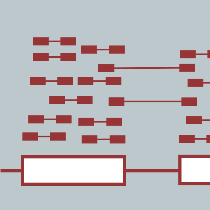

RNA-Seq Analysis

I Introduction
Workshop Info
Class Photo
Schedule
Pre-work
Meet Your Faculty
II Modules
Module 0: Introductions and Environment Setup
Lecture
Environment Setup
Tool Installation
Note
SAMtools
bam-readcount
HISAT2
StringTie
gffcompare
htseq-count
TopHat
kallisto
FastQC
Fastp
MultiQC
Picard
RegTools
RSeQC
bedops
gtfToGenePred
genePredToBed
how_are_we_stranded_here
Install Cell Ranger
Install R
R Libraries
Bioconductor
Sleuth
PRACTICAL EXERCISE 1 - Software Installation
Add locally installed tools to your PATH [OPTIONAL]
Installing tools from official ubuntu packages [OPTIONAL]
Installing tools by Docker image
Installing tools by Docker image (using Singularity)
Module 1
Lecture
Labs
Module 1 - Key concepts
Module 1 - Learning objectives
Lecture
FASTA/FASTQ/GTF mini lecture
Obtain a reference genome from Ensembl, iGenomes, NCBI or UCSC.
Note on complex commands and scripting in Unix
PRACTICAL EXERCISE 2 (ADVANCED)
FASTA/FASTQ/GTF mini lecture
Obtain Known Gene/Transcript Annotations
Definitions:
The Purpose of Gene Annotations (.gtf file)
Sources for obtaining gene annotation files formatted for HISAT2/StringTie/Ballgown
Important notes:
Indexing mini lecture
Create a HISAT2 index
Obtain RNA-seq test data.
Determining the strandedness of RNA-seq data (Optional)
PRACTICAL EXERCISE 3
Module 2
Lecture
Labs
Module 2 - Key concepts
Module 2 - Learning objectives
Lectures
Read trimming with Fastp
Use FastQC and multiqc to compare the impact of trimming
Clean up
PRACTICAL EXERCISE 5
Alignment mini lecture
HISAT2 alignment
Merge HISAT2 BAM files
PRACTICAL EXERCISE 6
Introduction
Visualization Part 1: Getting familiar with IGV
Visualization Part 2: Inspecting SNPs, SNVs, and SVs
Visualization Part 3: Automating Tasks in IGV
Indexing BAM files with samtools
Visualize alignments with IGV
PRACTICAL EXERCISE 7
BAM Read Counting
PRACTICAL EXERCISE 7
Alignment QC mini lecture
Use samtools and FastQC to evaluate the alignments
Create versions of our BAM files with only the chromosome 22 alignments
Using FastQC
Using Picard
RSeQC [optional]
MultiQC
View a pre-generated MultiQC report for full bam files
Part I - Obtaining the dataset & reference files
Part II - Data Preprocessing (QC & Trimming)
Part III - Alignment
Part IV - Post-alignment QC & IGV Visualization
Presenting Your Results
Module 3
Lecture
Labs
Module 3 - Key concepts
Module 3 - Learning objectives
Lectures
Expression mini lecture
Use Stringtie to generate expression estimates from the SAM/BAM files generated by HISAT2 in the previous module
PRACTICAL EXERCISE 8
Differential Expression mini lecture
Ballgown DE Analysis
PRACTICAL EXERCISE 9
ERCC DE Analysis
Differential Expression mini lecture
edgeR DE Analysis
Differential Expression mini lecture
DESeq2 DE Analysis
Setup
Format htseq counts data to work with DESeq2
Filter raw counts
Specifying the experimental design
Construct the DESeq2 object piecing all the data together
Running DESeq2
Log-fold change shrinkage
Annotate gene symbols onto the DE results
Data manipulation
Save results to files
Briefly examine the top over-expressed genes
Perform some preliminary exploration of DE genes using webtools
Visualize overlap with a venn diagram. This can be done with simple web tools like:
Ballgown DE Visualization
Differential Expression Visualization
Viewing pairwise sample clustering
Part I - Expression Estimation
Part II - Differential Expression
Presenting Your Results
PART 0 : Obtaining Data and References
Part 1 : Data preprocessing
Part 2: Data alignment
Part 3: Expression Estimation
Part 4: Differential Expression Analysis
Part 5: Differential Expression Analysis Visualization
Sponsors
RNA-seq Analysis 2025
Meet Your Faculty